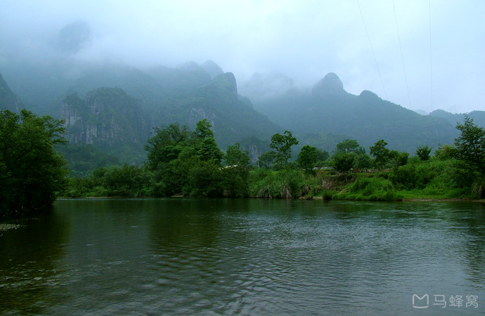
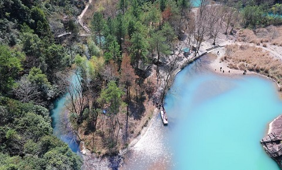
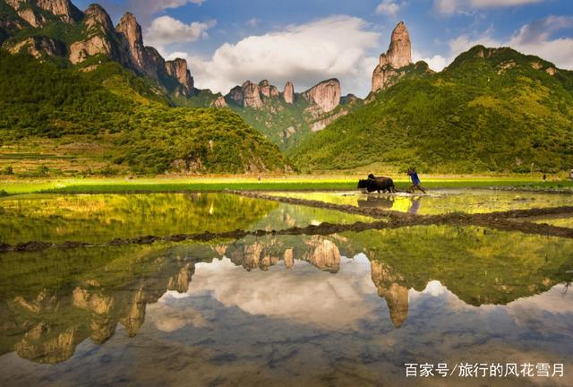
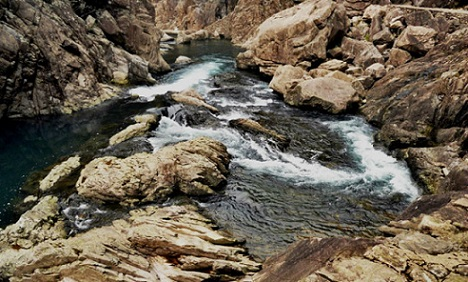
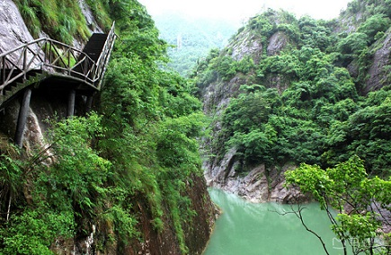
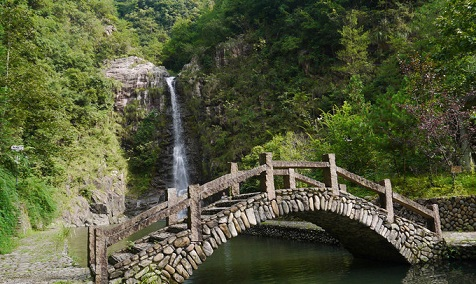
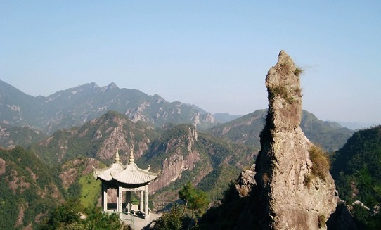

morly旅游网
我国的江川众多，有的奔腾咆哮，有的平静如水，但是这三百里悠悠流淌着的楠溪江，却有着自己独特的味道。这里的景观可不仅只有美丽的江景，还有岸边的的各种岩石、瀑布、古老的村落等等，一起形成了田园风光无限好的美丽的画卷。这个绝美的世外桃源让你看到你绝没有看到过的景色。
楠溪江位于浙江永嘉县境内，东侧以北雁荡山脉为界，西侧是括苍山脉，三面环山，江水贯穿永嘉南北，东归入海。一千六百年前这里流出了中国山水诗，直到今天，这片山河依然保有着纯朴的世外桃源般的气质。
 游玩推荐
龙湾潭景区
楠溪江的瀑布景观数不胜数，尤其是龙湾潭景区里的瀑布最为显著。由于越来越多的游客来到这里，发现了这个风景优美的地方，游客也越来越多，所以这个龙湾潭公园的景色有很多正在开发，也有已经开发的。龙湾潭最奇特的应该就是就七折瀑和五连瀑了，七个瀑布连在一起，水流从上飞泻直下，落入碧潭中，激起层层水花，可以说十分壮观了。龙湾潭的瀑布、潭水景观众多，每一个都有自己的特色，而且景区里的树木资源丰富，各种各样，空气清新，环境优美，值得驻足一一观赏。
 狮子岩
狮子岩位于大楠溪景区，是岩头镇西岸村前潭中的两座小屿，站岸边远望水中奇岩，酷似狮子戏球，故名狮子岩。这一带景色迷人，是楠溪江的天然盆景。 狮子岩其中一屿如狮，浑身怪石嶙峋，昂首张口，迎流而踞。另一屿似球，名“狮子球屿”，其上树木丛生，百草丰茂，江风吹来，树冠摇曳，宛如狮球滚动。 白天，狮子岩倩影投入如镜的潭中，雄姿娇态，风情万种，国内外无数的摄影爱好者为之着迷；晚上，皓月当空，竹筏队队，鸬鹚捕捉溪鱼，渔灯点点，照彻江面，碧波下灯火阑珊，织出亦真亦幻的水中世界。
石桅岩景区
石桅岩景区位于楠溪江风景名胜区东北部，在鹤盛乡下岙村的峡谷中，擎天拔地，有“浙南天柱”之誉，堪称华夏之冠。为一块高306米的浅红色巨石，岩顶如并蒂莲蕾，比肩而耸，形似船桅，故名石桅岩。
大若岩景区
大若岩位于小楠溪中游，总面积85平方公里，从九丈大桥沿永缙公路西行约14公里，即可抵达该景区中心——大若岩陶公洞。景区奇山秀水观赏价值较高，尤以飞瀑、奇峰、异洞见长。瀑布数量多，而又千姿百态。百丈瀑以宏大气势和落差高取胜；藤溪瀑潭天造地设，以美妙精巧著称，九漈瀑以漈多并富于节奏独秀一方；崖下库因藏而不露，“闻其声不见其形”，而使之引人入胜；陶公洞洞穴幽深，环境优美，且历史悠久，香火旺盛。距陶公洞北1．5公里，有“十二峰”，犀牛峰、天柱峰、石笋峰、宝冠峰，还有横琴、卓笼、展旗、石碑、莲花、仙掌、香炉、童子峰。十二峰则峰峰相挤，峥嵘挺拔，更为其他峰峦景观所不及。景区还因开发较早，历代文人墨客多有题咏，神话传说也较丰富。
 内容整理至网络，如有侵权，请联系我们！1255394075@qq.com